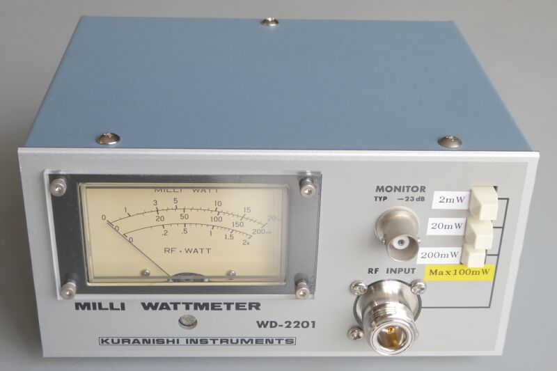
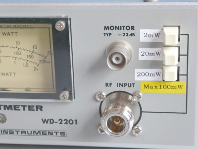
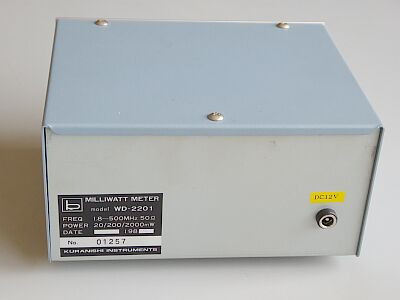
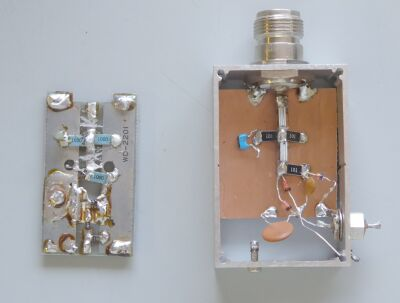
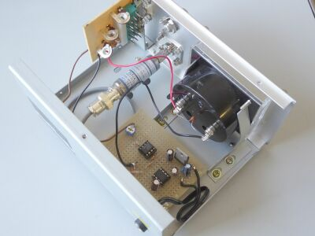
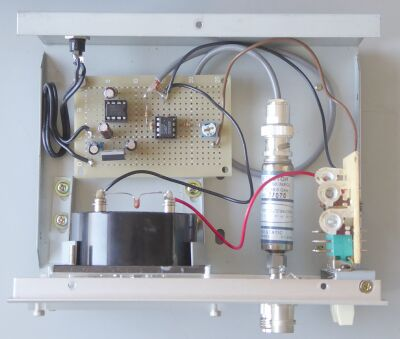

クラニシ ＷＤ-２２０１に不満があったわけではありません
接続をミスして、ＨＦ１００Ｗを入れて壊してしまったことが、ことの発端です
チップ抵抗や、ショットキーダイオードを使ったりして、復旧を目指したのですが、思うような成果が得られません
オークション市場を見ても、数は少ないし随分高額で取引されています(とても手が出せません！）
そこで高名なデテクターを使って、本格的なアナログパワー計の製作を目指しました
デテクターは、オークションで手に入れた Ｗｉｌｔｒｏｎ ７５Ｓ５０ という １０ＭＨｚ～１８ＧＨｚに対応した、Ｍａｘ１００ｍＷのもので、極性はネガティブでした
このままでは、メーターの接続は負荷が重たいので、メータードライブ回路を組み入れました
回路は、ＩＣＯＭ元技術部門の取締役（ＩＣＯＭで一番多くの特許保有者） ＪＡ３ＦＭＰ 櫻井氏の執筆された『楽しいエレクトロニクス工作』から使わせていただきました
仮で試験したところ、メータースケール一番上の０～２０ｍＷスケールが、ほぼほぼ計測値に一致しましたので、改造を進めることにしました |
|
 |
一番上のメータースケールが、ほぼほぼ計測値に一致します
使用するのは(目で見るのは）この一番上のスケールだけ、これから換算です(1/10、1/1、10倍） |
|
 |
ＢＮＣレセプタクルは、未使用
本来２０ｍＷスケールだけで良かったのですが、折角切り替えができるような構造になっていますので、活用することにしました
デテクターの入力が、最大１００ｍＷですので、ここは要注意です |
 |
本体背面
ＤＣ１２Ｖ入力端子を用意
内部で定電圧化した±５Ｖを得ますので、簡単なアダプタの利用が可能です
|
 |
検知部
オリジナルは、右のケースに左の基板が収まっていました
(上下、シールドされていました）
その基板を使ったり、新たに基板を用意したりして、いろいろ試したのですが、いい結果が得られませんでした |
 |
こちらが、最終形の内部です
ＮＪ－ＳＭＡＪレセプタクルに、デテクターと、検出電圧を取り出すＢＮＣＰ・・・これだけの長さが無事収まりました
基板は、ＤＣ１２Ｖから±５Ｖを得る電源回路と、入力電圧を反転させ、バッファリングするオペアンプを乗せただけのものです
|
 |
真上から見た内部
スケール合わせのために、オリジナルの半固定ＶＲに固定抵抗を抱かせて調整範囲を変更しています
|
|
１０ＭＨｚから３．２ＧＨｚまでは、動作の確認ができています(手持ちＳＳＧの範囲！）
ほぼほぼ正確に表示します
あとは、外部アッテネータの利用で、活躍範囲が増えることでしょう
デジタルのパワー計（Gigatoronics製）を持ってはいるのですが、変化するものを測るには、やはりアナログ方式のほうが便利なもので、このような微小電力計を用意することになってしまいました |